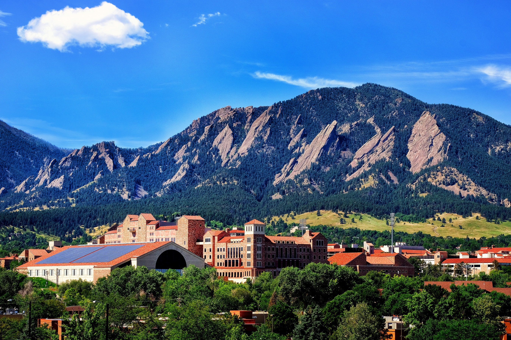
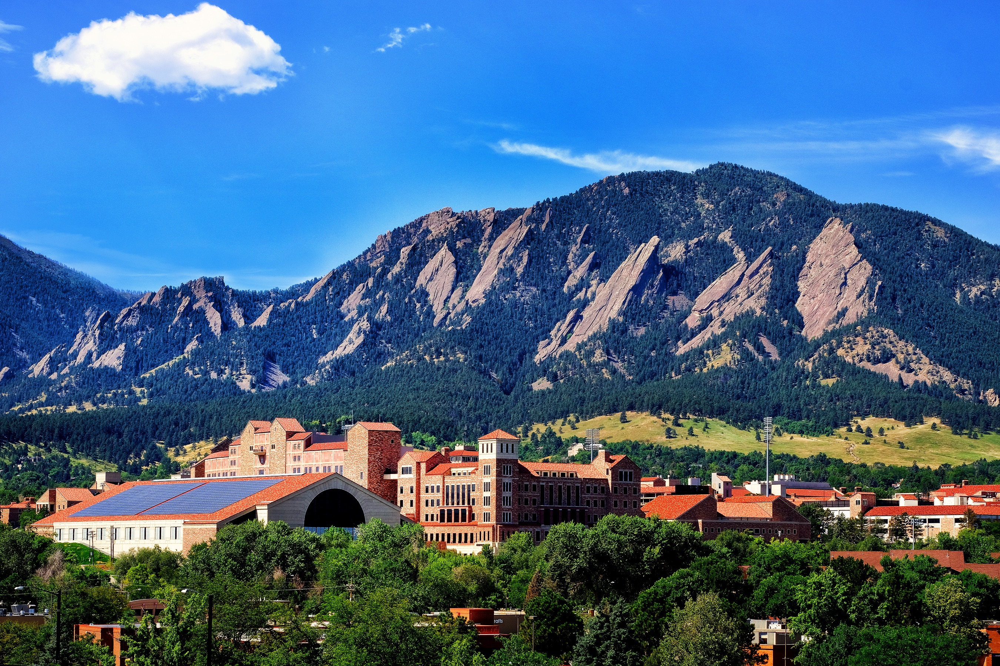
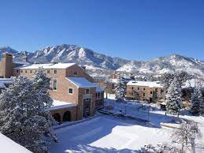

Yellowstone National Park

Location: Yellowstone National Park, Wyoming

Boulder, Colorado

Geographical Location: United States
Boulder is a perfect balance of urban and outdoors.
Known for its stellar food scene, breweries, an always-exciting downtown and more outdoor activities than you can count, the city is just 30 minutes northwest of Denver, where the Rocky Mountains meet the plains.
Photo Gallery

You can go skiing while it is still snowing.
 

Take a tour through Boulder Colorado's College campus and peaceful campus.
El You take a hike through the extensive mountain trails behind the campus.